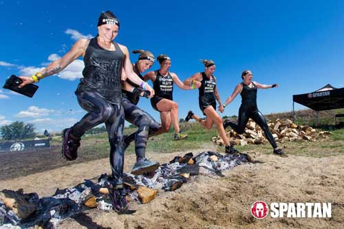

Welcome to OCR Hobbyist
Where we discuss everything OCR!
The OCR Hobbyist is here to share all the latest tips, tricks, and updates for each Spartan Race attended by our team. Through our blog you will learn all about the venues, race-day how tos, and tips for obstacle completion. We also share the most recent race stats of our teammembers, to help give you an idea of an average to competitive completion time. We also offer the opportunity to run an open race with a teammember for beginners, or those who just don't want to race alone. To run in the next open race with a team member please be sure to contact us. The distances run by the team are mainly Sprints (5 K) and Supers (10 K), though we participate in Beasts (21 K) as well. Most of the races attended are West Coast based, though we hope to expand to East Coast as well as worldwide soon!
Take a peek at the blog now.